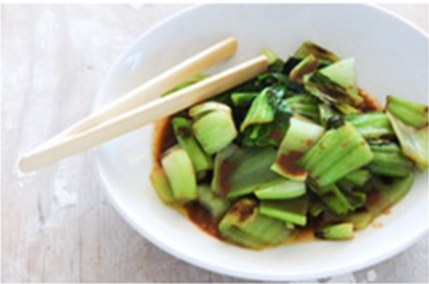

Bok Choi
 Teriyaki Sauce
Teriyaki Sauce
Japanese Vegetarian
Five week course in LondonA five week introduction to traditional Japanese vegetarian meals, teaching you a selection of rice and noodle dishes.
Sauce Masterclass
One day workshopAn intensive one-day looking at how to create the most delicious sauces for use in a range of Japanese cookery.
Popular Recipes
Yakitori (grilled chicken)Tsukune (minced chicken patties)
Okonomiyaki (savory pancakes)
Mizutaki (chicken stew)
Contact
Yoko's Kitchen27 Redchurch Street
Shoreditch
London E2 7DP